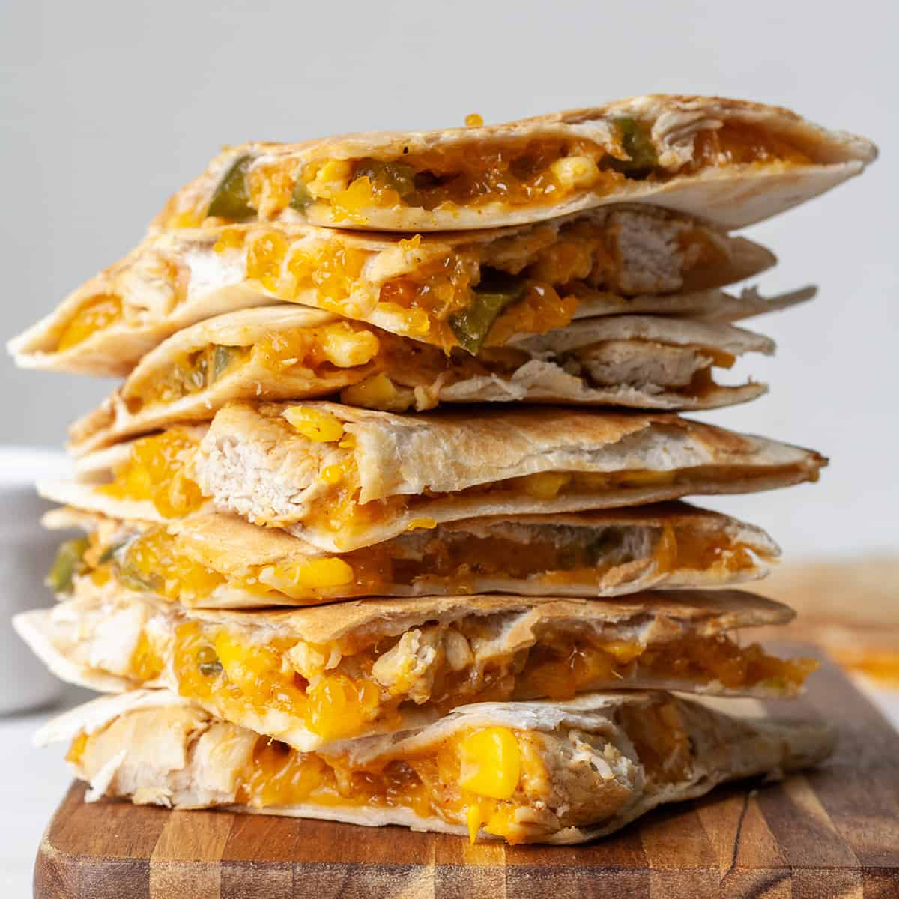

Food of the World
Chicken Quesadilla Recipe
Origin: Mexican Source: Well Plated Category: Main Dish A plain cheese quesadilla of the white tortilla + prebagged cheese + microwave-until-melted variety can be made a bit of a joke when describing someone’s ability to “cook,” but this juicy chicken quesadilla is well-above basic.
Recipe Ingredients
Recipe Steps
- Add the chicken to a bowl, then stir in half of the spices.
- Sauté the vegetables with spices.
- Assemble the quesadillas by piling the fillings onto one half of a tortilla.
- Fold the empty tortilla half over the top. Repeat.
- Cook the quesadillas two at a time in a skillet.
- Flip after about 4 minutes, cooking on the other side for a few minutes. Let cool, slice, and DIG IN!
Additional Food images


Double Chocolate Cookies
Origin: Michigan Source: Family Recipe Category: Dessert
My daughter learned to make these cookies at a baking camp at Zingermanns and has tweaked the recipe to fit the taste buds of her siblings. They are extremely sugary so the salt helps to balance it. Note, these cookies are best eaten very quickly.
Recipe Ingredients
Recipe Steps
- In a mixing bowl cream together the butter, granulated sugar, and brown sugar
- Add the egg and vanilla extract and beat well
- Add the melted chocolate
- In a separate bowl combine the flour, baking soda, cocoa powder and salt
- Combine the wet and dry ingredients
- Add the unmelted chocolate chunks.
- Form 15 cookies and place on a baking sheet.
- Cook for 12 to 13 minutes at 350 degrees.
Additional Food images


Chicken Tikka Masala
Origin: India Source: Tasty Category: Main Dish
Chicken Tikka Masala is a delicious dish to have for dinner. I had it for dinner last night! It has a nice mixture of savory and sweet flavors, and is best served with Naan and rice and vegetables.
Recipe Ingredients
Recipe Steps
- Slice the chicken into bite-sized chunks. Combine the cubed chicken with the yogurt, lemon juice, garlic, ginger, salt, cumin, garam masala, and paprika and stir until well-coated.
- Cover and refrigerate for at least 1 hour, or overnight.
- Preheat the oven to 500°F (260°C). Line a high-sided baking pan or roasting tray with parchment paper.
- Place the marinated chicken pieces on bamboo or wooden skewers, then set them over the prepared baking pan, making sure there is space underneath the chicken to help distribute the heat more evenly. Bake for about 15 minutes, until slightly dark brown on the edges.
- Make the sauce: Heat the oil in a large pot over medium heat, then sauté the onions, ginger, and garlic until tender but not browned. Add the cumin, turmeric, coriander, paprika, chili powder, and garam masala and stir constantly for about 30 seconds, until the spices are fragrant. Stir in the tomato puree, tomato sauce, and 1 ¼ cups of water, then bring to a boil and cook for about 5 minutes. Pour in the cream.
- Remove the chicken from the skewers and add to the sauce, cooking for another 1-2 minutes. Garnish with cilantro and serve over rice or alongside naan bread. Enjoy!
Additional Food images